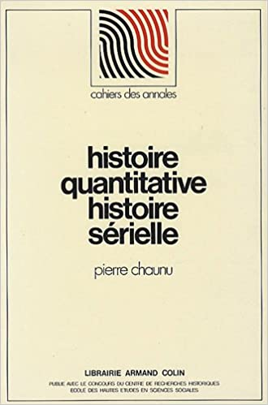
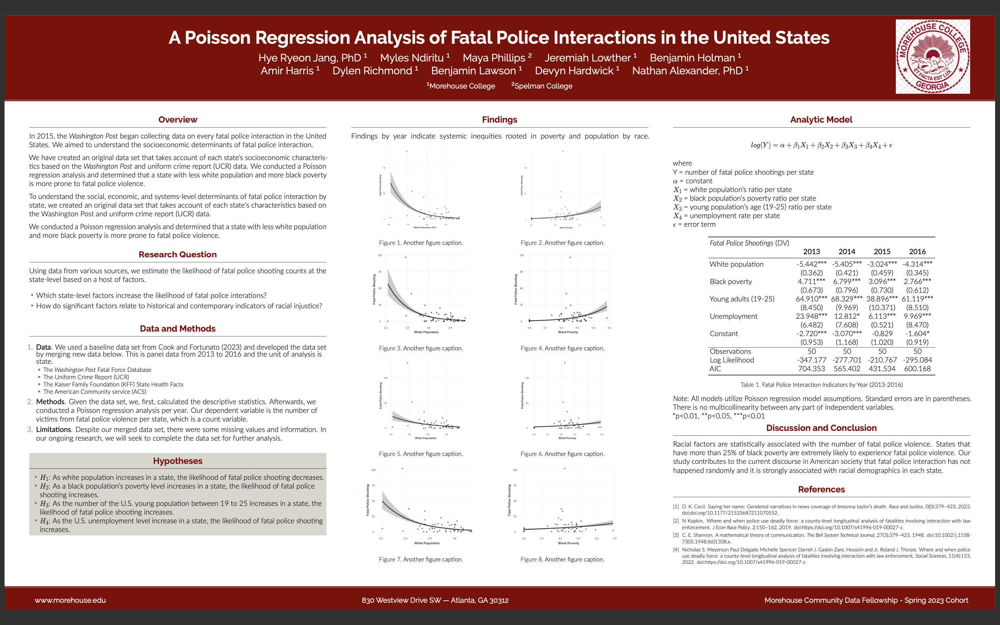
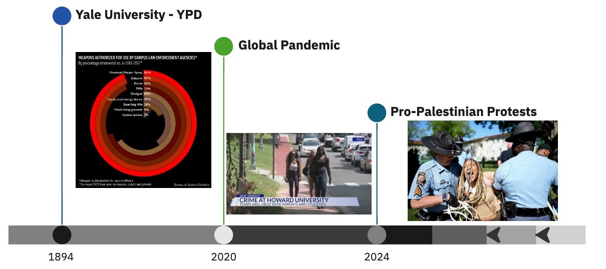
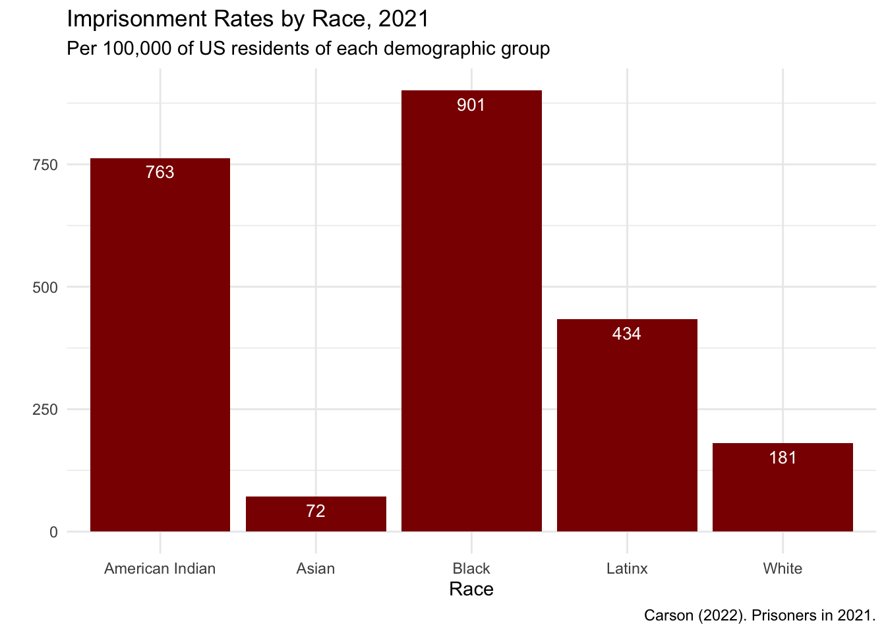
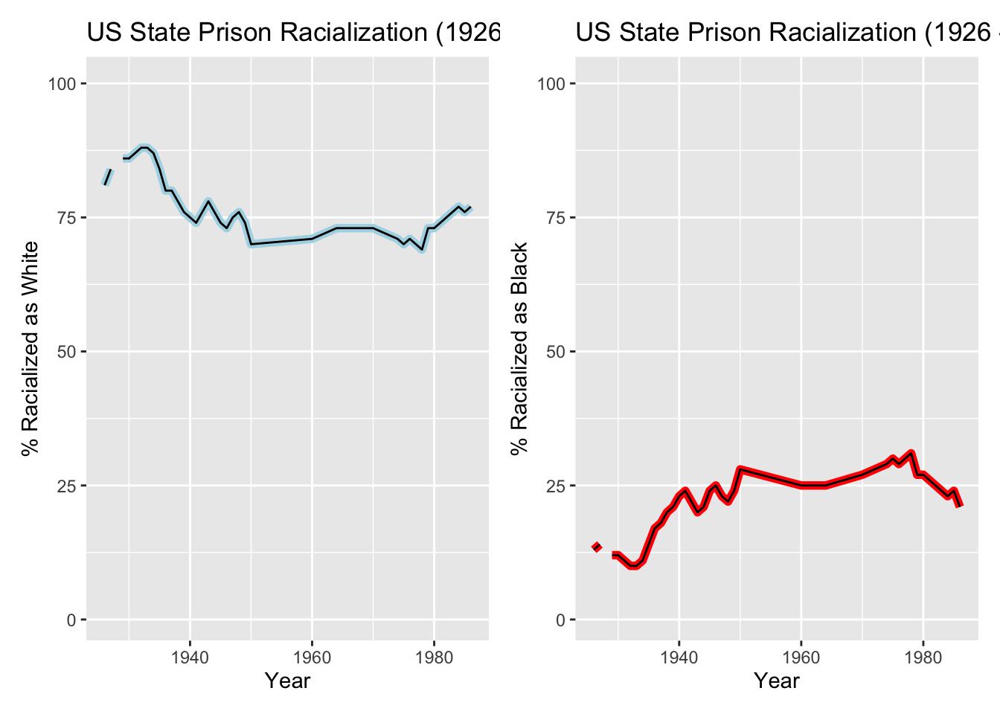
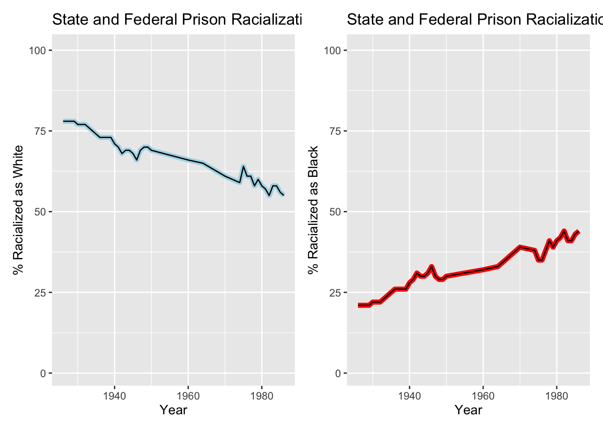

Names
1 Paul Hill, Paul Archer, William Archer, Emma Fair
2 unknown negro
3 Calvin Thomas
4 Tillman Green
5 Patrick Wells
6 Frank Harrell, William Filder
7 Richard Mays
8 Dug Hazleton
9 Judge McNeil
10 Frank Smith
11 William Jackson
12 Riley Gulley
13 John Davis
14 Robert Kennedy
15 Richard Forman
16 David Jackson
17 Thomas Smith
18 four unknown negroes
19 Thomas Carr
20 William Butler
21 Charles Tart
22 Robert Greenwood
23 Allen Butler
24 two unknown negroes
25 Edward Wagner, William Wagner, Samuel Motlow, Eliza Motlow
26 Robert Landry, Chicken George, Richard Davis
27 Benjamin Menter, Robert Wilkins, Jospeh Gevhens
28 Valsin Julian, Basil Julian, Paul Julian, John Willis
29 Samuel Thorp
30 George S. Riechen
31 Joseph Bird
32 James Lamar
33 Henry Miller
34 Ada Hiers
35 Alexander Brown
36 W.G. Jamison
37 John Ferguson
38 Oscar Johnston
39 Henry Ewing
40 William Smith
41 Staples Green
42 Hiram Jacobs, Lucien Mannet, Hire Bevington, Weldon Gordon, Parse Strickland,
43 William Dalton
44 M.B. Taylor
45 Isaac Williams
46 Miller Davis
47 John Johnston
48 Calvin Stewart
49 Henry Coleman
50 William Richards, James Dickson
51 Edward Jenkins
52 Henry Boggs
53 three unknown negroes
54 D.T. Nelson
55 Newton Jones
56 Lucius Holt
57 two unknown negroes
58 Henry Fleming
59 unknown negro
60 Meredith Lewis
61 Edward Bill
62 Henry Reynolds
63 unknown negro
64 unknown negro
65 Charles Walton
66 Charles Tait
67 Leonard Taylor
68 Benjamin Jackson
69 John Williams
70 unknown negro
71 two unknown negroes
72 Benjamin Jackson, ,
73 Mahala Jackson
74 Louisa Carter
75 W.A. Haley
76 Rufus Bigley
77 John Hughes
78 Isaac Lincoln
79 Daniel Adams
80 Charles Martin
81 William Steen
82 unknown negro
83 unknown negro
84 Mack Segars
85 Charles T. Miller
86 Daniel Lewis, James Taylor, John Chambers
87 Henry G. Givens
88 Sloan Allen
89 Andy Blount
90 William Ferguson
91 James Williams
92 unknown negro
93 Joseph Hayne
94 Abner Anthony
95 homas Hill
96 John Peterson
97 Samuel Gaillard
98 Haywood Banks
99 Israel Halliway
100 unknown negro
101 John Wallace
102 Samuel Bush
103 L.C. Dumas
104 William Shorter
105 George Williams
106 Daniel Edwards
107 Ernest Murphy
108 unknown negro, unknown negro
109 Robert Larkin
110 Warren Dean
111 unknown negro
112 John Cotton
113 Lee Walker
114 Handy
115 William Thompson, Thomas Preston, Handy Kaigler
116 Isaac Harper
117 Monroe Smith
118 negro tramp
119 John Nilson
120 Jacob Davis
121 William Arkinson
122 unknown negro
123 Jessie Mitchell
124 Perry Bratcher
125 William Lacey
126 John Gamble
Location Date Alleged.Crime
1 Carrollton, Ala. Sept. 15, 1893 Arson
2 Fannin, Miss. Dec. 23, 1893 Suspected Robbery
3 Brainbridge, Ga. Dec. 25, 1893 Assault
4 Columbia, La. Dec. 28, 1893 Attempted Assault
5 Quincy, Fla. Jan. 26, 1893 Incendiarism
6 Dickery, Miss. Feb. 9, 1893 Incendiarism
7 Springville, Mo. Feb. 21, 1893 Attempted Rape
8 Carrollton, Ga. Aug. 14, 1893 Attempted Rape
9 Cadiz, Ky. Sept. 1, 1893 Attempted Rape
10 Newton, Miss. Sept. 11, 1893 Attempted Rape
11 Nevada, Mo.; Sept. 16, 1893 Attempted Rape
12 Pine Apple, Ala. Sept. 19, 1893 Attempted Rape
13 Shorterville, Ala. Oct. 9, 1893 Attempted Rape
14 Spartansburg, S.C. Nov. 8, 1893 Attempted Rape
15 Granada, Miss. Feb. 16, 1893 Burglary
16 Covington, La. Oct. 14, 1893 Wife Beating
17 Roanoke, Va. Sept. 21, 1893 Attempted Murder
18 Selma, Ala. Dec. 12, 1893 Attempted Robbery
19 Kosciusko, Miss. Jan. 30, 1893 Race Prejudice
20 Hickory Creek, Texas Feb. 7, 1893 Race Prejudice
21 Lyons Station, Miss. Aug. 27, 1893 Race Prejudice
22 Cross county, Ark. Dec. 7, 1893 Race Prejudice
23 Lawrenceville, Ill. July 14, 1893 Race Prejudice
24 Knox Point, La. Oct. 24, 1893 Thieves
25 Lynchburg, Va. Nov. 4, 1893 Alleged Barn Burning
26 St. James Parish, La. Jan. 21, 1893 Alleged Murder
27 Berlin, Ala. Dec. 8, 1893 Alleged Murder
28 Jefferson Parish, La. Sept. 16, 1893 Alleged Complicity in Murder
29 Savannah, Ga. June 29, 1893 Murder
30 Waynesboro, Ga. June 29, 1893 Murder
31 Wilberton, I.T. June 30, 1893 Murder
32 Darien, Ga. July 1, 1893 Murder
33 Dallas, Texas July 28, 1893 Murder
34 Walterboro, S.C. July 28, 1893 Murder
35 Bastrop, Texas July 28, 1893 Murder
36 Quincy, Ill. July 30, 1893 Murder
37 Lawrens, S.C. Sept. 1, 1893 Murder
38 Berkeley, S.C. Sept. 1, 1893 Murder
39 Berkeley, S.C. Sept. 1, 1893 Murder
40 Camden, Ark. Sept. 8, 1893 Murder
41 Livingston, Ala. Sept. 15, 1893 Murder
42 Mount Vernon, Ga. Sept. 29, 1893 Murder
43 Cartersville, Ga. Oct. 20, 1893 Murder
44 Wise Court House, Va. Oct. 27, 1893 Murder
45 Madison, Ga. Oct. 27, 1893 Murder
46 Center Point, Ark. Nov. 10, 1893 Murder
47 Auburn, N.Y. Nov. 14, 1893 Murder
48 Langley, S.C. Sept. 27, 1893 Murder
49 Denton, La. Sept. 29, 1893 Murder
50 Summerfield, Ga. Oct. 18, 1893 Murder
51 Clayton county, Ga. Oct. 27, 1893 Murder
52 Fort White, Fla. Nov. 9, 1893 Murder
53 Lake City Junction, Fla. Nov. 14, 1893 Murder
54 Varney, Ark. Nov. 14, 1893 Murder
55 Baxley, Ga. Nov. 29, 1893 Murder
56 Concord, Ga. Dec. 2, 1893 Murder
57 Richmond, Ala. Dec. 10, 1893 Murder
58 Columbus, Miss. July 12, 1893 Murder
59 Briar Field, Ala. July 17, 1893 Murder
60 Roseland, La. July 18, 1893 Murder
61 Dresden, Tenn. July 29, 1893 Murder
62 Montgomery, Tenn. Aug. 1, 1893 Murder
63 McCreery, Ark. Aug. 9, 1893 Murder
64 Brantford, Fla. Aug. 12, 1893 Murder
65 Morganfield, Ky. Aug. 18, 1893 Murder
66 Memphis, Tenn. Aug. 21, 1893 Murder
67 New Castle, Ky. Aug. 28, 1893 Murder
68 Quincy, Miss. Sept. 8, 1893 Murder
69 Jackson, Tenn. Sept. 14, 1893 Murder
70 Wingo, Ky. July 30, 1893 Self Defense
71 Franklin Parish, La. Aug. 18, 1893 Poisoning Wells
72 Jackson, Miss. Sept. 15, 1893 Alleged Well Poisoning
73 Jackson, Miss. Sept. 15, 1893 Alleged Well Poisoning
74 Jackson, Miss. Sept. 15, 1893 Alleged Well Poisoning
75 Jackson, Miss. Sept. 15, 1893 Alleged Well Poisoning
76 Jackson, Miss. Sept. 15, 1893 Alleged Well Poisoning
77 Moberly, Mo. Feb. 18, 1893 Insulting Whites
78 Fort Madison, S.C. June 2, 1893 Insulting Whites
79 Selina, Kan. April 20, 1893 Murderous Assault
80 Shelby Co., Tenn. July 21, 1893 No Offense
81 Paris, Miss. July 30, 1893 No Offense
82 Yarborough, Tex. Aug. 31, 1893 No Offense
83 Houston, Tex. Sept. 30, 1893 No Offense
84 Brantley, Ala. Dec. 28, 1893 No Offense
85 Bardwell, Ky. July 7, 1893 Alleged Rape
86 Waycross, Ga. Aug. 10, 1893 Alleged Rape
87 Nebro, Ky. Dec. 16, 1893 Alleged Stock Poisoning
88 West Mississippi. Dec. 23, 1893 Suspected Murder
89 Chattanooga, Tenn. Feb. 14, 1893 Suspicion of Rape
90 Adele, Ga. Dec. 19, 1893 Turning States Evidence
91 Pickens Co., Ala. Jan. 19, 1893 Rape
92 Forest Hill, Tenn. Feb. 11, 1893 Rape
93 Paine, Jellico, Tenn. Feb. 26, 1893 Rape
94 Hot Springs, Va. Nov. 1, 1893 Rape
95 Spring Place, Ga. Nov. 1, 1893 Rape
96 Denmark, S.C. April 24, 1893 Rape
97 \xe4\xf3\xee\xe4\xf3\xee, S.C. May 6, 1893 Rape
98 Marksdale, Columbia, S.C. May 10, 1893 Rape
99 Napoleonville, La. May 12, 1893 Rape
100 Wytheville, Va. May 12, 1893 Rape
101 Jefferson Springs, Ark. May 31, 1893 Rape
102 Decatur, Ill. June 3, 1893 Rape
103 Gleason, Tenn. June 8, 1893 Rape
104 Winchester, Va. June 13, 1893 Rape
105 Waco, Tex. June 14, 1893 Rape
106 Selina or Selma, Ala. June 24, 1893 Rape
107 Daleville, Ala. June 27, 1893 Rape
108 Poplar Head, La. July 6, 1893 Rape
109 Oscola, Tex. July 12, 1893 Rape
110 Stone Creek, Ga. July 17, 1893 Rape
111 Brantford, Fla. July 21, 1893 Rape
112 Connersville, Ark. July 17, 1893 Rape
113 New Albany, Miss. July 22, 1893 Rape
114 Suansea, S.C. July 26, 1893 Rape
115 Columbia, S.C. July 30, 1893 Rape
116 Calera, Ala. July 28, 1893 Rape
117 Springfield, Ala. Aug. 13, 1893 Rape
118 Paducah, Ky. Aug. 19, 1893 Rape
119 Leavenworth, Kan. Aug. 21, 1893 Rape
120 Green Wood, S.C. Aug. 23, 1893 Rape
121 McKenney, Ky. Sept. 2, 1893 Rape
122 Centerville, Ala. Sept. 16, 1893 Rape
123 Amelia C.H., Va. Sept. 16, 1893 Rape
124 New Boston, Tex. Sept. 25, 1893 Rape
125 Jasper, Ala. Oct. 9, 1893 Rape
126 Pikesville, Tenn. Oct. 22, 1893 Rape
Latitude Longitude
1 41.046 -96.196
2 41.046 -96.196
3 41.046 -96.196
4 41.046 -96.196
5 41.046 -96.196
6 41.046 -96.196
7 41.046 -96.196
8 41.046 -96.196
9 41.046 -96.196
10 41.046 -96.196
11 41.046 -96.196
12 41.046 -96.196
13 41.046 -96.196
14 41.046 -96.196
15 41.046 -96.196
16 41.046 -96.196
17 41.046 -96.196
18 41.046 -96.196
19 41.046 -96.196
20 41.046 -96.196
21 41.046 -96.196
22 41.046 -96.196
23 41.046 -96.196
24 41.046 -96.196
25 41.046 -96.196
26 41.046 -96.196
27 41.046 -96.196
28 41.046 -96.196
29 41.046 -96.196
30 41.046 -96.196
31 41.046 -96.196
32 41.046 -96.196
33 41.046 -96.196
34 41.046 -96.196
35 41.046 -96.196
36 41.046 -96.196
37 41.046 -96.196
38 41.046 -96.196
39 41.046 -96.196
40 41.046 -96.196
41 41.046 -96.196
42 41.046 -96.196
43 41.046 -96.196
44 41.046 -96.196
45 41.046 -96.196
46 41.046 -96.196
47 41.046 -96.196
48 41.046 -96.196
49 41.046 -96.196
50 41.046 -96.196
51 41.046 -96.196
52 41.046 -96.196
53 41.046 -96.196
54 41.046 -96.196
55 41.046 -96.196
56 41.046 -96.196
57 41.046 -96.196
58 41.046 -96.196
59 41.046 -96.196
60 41.046 -96.196
61 41.046 -96.196
62 41.046 -96.196
63 41.046 -96.196
64 41.046 -96.196
65 41.046 -96.196
66 41.046 -96.196
67 41.046 -96.196
68 41.046 -96.196
69 41.046 -96.196
70 41.046 -96.196
71 41.046 -96.196
72 41.046 -96.196
73 41.046 -96.196
74 41.046 -96.196
75 41.046 -96.196
76 41.046 -96.196
77 41.046 -96.196
78 41.046 -96.196
79 41.046 -96.196
80 41.046 -96.196
81 41.046 -96.196
82 41.046 -96.196
83 41.046 -96.196
84 41.046 -96.196
85 41.046 -96.196
86 41.046 -96.196
87 41.046 -96.196
88 41.046 -96.196
89 41.046 -96.196
90 41.046 -96.196
91 41.046 -96.196
92 41.046 -96.196
93 41.046 -96.196
94 41.046 -96.196
95 41.046 -96.196
96 41.046 -96.196
97 41.046 -96.196
98 41.046 -96.196
99 41.046 -96.196
100 41.046 -96.196
101 41.046 -96.196
102 41.046 -96.196
103 41.046 -96.196
104 41.046 -96.196
105 41.046 -96.196
106 41.046 -96.196
107 41.046 -96.196
108 41.046 -96.196
109 41.046 -96.196
110 41.046 -96.196
111 41.046 -96.196
112 41.046 -96.196
113 41.046 -96.196
114 41.046 -96.196
115 41.046 -96.196
116 41.046 -96.196
117 41.046 -96.196
118 41.046 -96.196
119 41.046 -96.196
120 41.046 -96.196
121 41.046 -96.196
122 41.046 -96.196
123 41.046 -96.196
124 41.046 -96.196
125 41.046 -96.196
126 41.046 -96.196Data Wells: Race and State Violence in the United States from 1892
Quantitative Histories Workshop
A focus on “Data Wells”: Data + Ida B. Wells-Barnett
We use the term “Data Wells” to describe how we practice the identification, input, and storage of what can be termed as critical insights data, or CIDs.
We use information in databases in four ways:
studying problems in the quantification of historical information across various axes: time, social constructs, and/or systemic issues,
data identification and wrangling,
data analysis and communication, and
modeling abstract inquiries.
We begin our analysis with Ida B. Wells-Barnett’s organization and analysis of lynching.
We describe “Data Wells” of U.S. state violence using quantitative history as a frame.
On the Principles of Reconstruction
Du Bois’ (1935) Black Reconstruction: An Essay Toward a History of the Part which Black Folk Played in the Attempt to Reconstruct Democracy in America, 1860-1880 offers an alternative assessment of the post-Civil War period in the United States.
Democracy provided a new narrative at the time to examine African American progress post enslavement, and it continued to challenge long-standing narratives about racial hierarchy.
Recently, notable scholars, such as Gloria Ladson-Billings, return to the importance of narratives of democracy in relation to the promise and perils of education and society broadly, while also highlighting the limits of liberalism.
Ida B. Wells and Reconstruction
Quantitative Histories Workshop
Curriculum & software development collective
and
research lab
Quantitative history
Quantitative history considers methods and approaches to artifacts as data and information.
Historians like Pierre Chanu (text to right) are centered in traditional texts; more perspectives are uncovering troubling practices with regard to race1.
Despite long-standing critiques, there are few critical dimensions in quantitative history narratives.

Racialization and U.S. State Violence
Today, we will discuss race and racialization in data wells of state sponsored violence:
. . .
- Lynching. Framing historical incidents and conceptualizing the contemporary formations of lynching.
. . .
- Policing. Understanding the role of policing in relation to both lynching and prisons.
. . .
- Prisons. Identifying narratives around prison populations and racialization.
Lynching
Caitlin Pollock developed maps using data extracted from Wells-Barnett’s work. Although the data provides for quick loading and analysis, it does require some data wrangling and other questions remain. We build on this data to examine the social implications of cartography and map making.
Content for 1893
Content for 1894
Names
1 Samuel Smith
2 Sherman Wagoner
3 Roscoe Parker
4 Henry Bruce
5 Sylvester Rhodes
6 Richard Puryea
7 Oliver Jackson
8 Saybrick
9 William Lewis
10 Jefferson Luggle
11 Samuel Slaugate, Thomas Claxton, David Hawkins,
12 Thel Claxton, Comp Claxton, Scot Harvey, Jerry McCly
13 Henry Scott
14 Coat Williams
15 Jefferson Crawford
16 Thondo Underwood
17 Isaac Kemp
18 Lon Hall, Bascom Cook
19 Luke Thomas
20 John Williams
21 Ulysses Hayden
22 Hood
23 James Bell
24 Henderson Hollander
25 Robert Williams
26 Luke Washington, Richard Washington, Henry Crobyson
27 Lawrence Younger
28 unknown Negro
29 Samuel Taylor, Charles Frazier, Samuel Pike, Harry Sherard, unknown Negro, unknown, Negro, unknown Negro
30 Daniel McDonald, William Carter
31 John Buckner
32 M.G. Cambell
33 unknown
34 Henry McCreeg
35 Daniel Ahren
36 Seymour Newland
37 Robert Evarts
38 James Robinson, Benjamin White
39 Nim Young
40 unknown
41 unknown
42 Owen Opliltree
43 Henry Capus
44 Caleb Godly
45 Fayette Franklin
46 Joseph Johnson
47 Lewis Bankhead
48 Marion Howard
49 William Griffith
50 William Nershbread
51 Marshall Boston
52 David Gooseby
53 Willis Griffey
54 Lee Lawrence
55 Needham Smith
56 Robert Mosely
57 William Jackson
58 unknown
59 Lamsen Gregory
60 unknown woman
61 Alfred Brenn
62 Harry Gill
63 unknown
64 Mrs. Teddy Arthur
65 Charles Willis
66 unknown
67 J.H. Dave
68 \x89\xdbӉ\xdb\xd3 Collins
69 Jesse Dillingham
70 unknown
71 Gabe Nalls, Ulysses Nails
72 James Allen
73 George King
74 Scott Sherman
75 Henry Smith, William James
76 Ready Murdock
77 unknown Negro
78 Vance McClure
79 William Tyler
80 James Smith
81 Henry Gibson
82 \x89\xdbӉ\xdb\xd3 Williams
83 Lewis Williams
84 George Linton
85 Edward White
86 George Pond
87 Augustus Pond
88 Mark Jacobs
89 unknown woman
90 James Perry
91 Lentige
92 J.T. Burgis
93 Archie Haynes, Burt Haynes, William Haynes
94 unknown Negro
95 James Nelson
96 Alfred Davis
97 Henry Montgomery
98 John Brownlee
99 Allen Myers
100 Frank Ballard
101 Negro
102 Samuel Wood
103 Thomas Black, John Williams, Toney Johnson
104 William Bell
105 Daniel Hawkins, Robert Haynes, Warner Williams, Edward Hall, John Haynes, Graham White
106 William Brooks
Location Date Alleged.Crime
1 Greenville, Ala. Jan. 9, 1894 Murder
2 Mitchell, Ind Jan. 11, 1894 Murder
3 West Union, Ohio Jan. 12, 1894 Murder
4 Gulch Co., Ark. Feb. 7, 1894 Murder
5 Collins, Ga. March 5, 1894 Murder
6 Stroudsburg, Pa. March 15, 1894 Murder
7 Montgomery, Ala. March 29, 1894 Murder
8 Fisher's Ferry, Miss. March 30, 1894 Murder
9 Lanison, Ala.; April 14, 1894 Murder
10 Cherokee, Kan. April 23, 1894 Murder
11 Tallulah, La. April 23, 1894 Murder
12 April 27, 1894 Murder
13 Jefferson, Tex. May 17, 1894 Murder
14 Pine Grove, Fla. May 15, 1894 Murder
15 Bethesda, S.C. June 2, 1894 Murder
16 Monroe, La. June 4, 1894 Murder
17 Cape Charles, Va. June 8, 1894 Murder
18 Sweethouse, Tex. June 13, 1894 Murder
19 Biloxi, Miss. June 15, 1894 Murder
20 Sulphur, Tex. June 29, 1894 Murder
21 Monett, Mo. June 29, 1894 Murder
22 Amite, Miss. July 6, 1894 Murder
23 Charlotte, Tenn. July 7, 1894 Murder
24 Elkhorn, W. Va. Sept. 2, 1894 Murder
25 Concordia Parish, La. Sept. 14, 1894 Murder
26 Meghee, Ark. Sept. 22, 1894 Murder
27 Lloyd, Va. Nov. 10, 1894 Murder
28 Williamston, S.C. Dec. 17, 1894 Murder
29 Brooks County, Ga. Dec. 23, 1894 Murder
30 Winston County, Miss. Dec. 26, 1894 Murder
31 Valley Park, Mo. Jan. 17, 1894 Rape
32 Jellico Mines, Ky. Jan. 21, 1894 Rape
33 Verona, Mo. Jan. 27, 1894 Rape
34 Pioneer, Tenn. Feb. 1, 1894 Rape
35 Greensboro, Ga. April 6, 1894 Rape
36 Rushsylvania, Ohio April 15, 1894 Rape
37 Jamaica, Ga. April 26, 1894 Rape
38 Manassas, Va. April 27, 1894 Rape
39 Ocala, Fla. May 15, 1894 Rape
40 Miller County, Ga. May 22, 1894 Rape
41 Blackshear, Ga. June 13, 1894 Rape
42 Forsyth, Ga. June 18, 1894 Rape
43 Magnolia, Ark. June 22, 1894 Rape
44 Bowling Green, Ky. June 26, 1894 Rape
45 Mitchell, Ga. June 28, 1894 Rape
46 Hiller's Creek, Mo. July 2, 1894 Rape
47 Cooper, Ala. July 6, 1894 Rape
48 Scottsville, Ky. July 16, 1894 Rape
49 Woodville, Tex. July 20, 1894 Rape
50 Rossville, Tenn. Aug. 12, 1894 Rape
51 Frankfort, Ky. Aug. 14, 1894 Rape
52 Atlanta, Ga. Sept. 19, 1894 Rape
53 Princeton, Ky. Oct. 15, 1894 Rape
54 Jasper County, Ga. Nov. 8, 1894 Rape
55 Tipton County, Tenn. Nov. 10, 1894 Rape
56 Dolinite, Ala. Nov. 14, 1894 Rape
57 Ocala, Fla. Dec. 4, 1894 Rape
58 Marion County, Fla Dec. 18, 1894 Rape
59 Bell's Depot, Tenn. March 6, 1894 Unknown Offense
60 Marche, Ark. March 6, 1894 Unknown Offense
61 Calhoun, Ga. April 14, 1894 Unknown Offense
62 West Lancaster, S.C. June 8, 1894 Unknown Offense
63 Landrum, S.C. Nov. 23, 1894 Unknown Offense
64 Lincoln County, W. Va. Dec. 5, 1894 Unknown Offense
65 Ocala, Fla. Jan. 14, 1894 Desperado
66 Bayou Sarah, La. Jan. 18, 1894 Suspected Incendiarism
67 Monroe, La. June 14, 1894 Suspected Arson
68 Athens, Ga. Feb. 10, 1894 Enticing Servant Away
69 Smokeyville, Tex. Feb. 10, 1894 Train Wrecking
70 Dublin, Ga. June 3, 1894 Highway Robbery
71 Blackford, Ky. Nov. 8, 1894 Incendiarism
72 Brownsville, Tex. Dec. 20, 1894 Arson
73 New Orleans, La. Dec. 23, 1894 Assault
74 Morehouse Parish, La. Dec. 28, 1894 No offense
75 Clinton, Miss. May 29, 1894 Burglary
76 Yazoo, Miss. June 4, 1894 Alleged Rape
77 Biloxi, Miss. July 14, 1894 Attempted Rape
78 New Iberia, La. July 26, 1894 Attempted Rape
79 Carlisle, Ky. July 26, 1894 Attempted Rape
80 Stark, Fla. Sept. 14, 1894 Attempted Rape
81 Fairfield, Tex. Oct. 8, 1894 Attempted Rape
82 Upper Marlboro, Md. Oct. 20, 1894 Attempted Rape
83 Hewett Springs, Miss. June 9, 1894 Attempted Rape
84 Brookhaven, Miss. June 28, 1894 Attempted Rape
85 Hudson, Ala. June 28, 1894 Attempted Rape
86 Fulton, Miss. July 6, 1894 Attempted Rape
87 Tupelo, Miss. July 7, 1894 Attempted Rape
88 Bienville, La. June 10, 1894 Race Prejudice
89 Sampson County, Miss. July 24, 1894 Race Prejudice
90 Knoxville, Ark. June 10, 1894 Introducing Small Pox
91 Harland County, Ky. March 2, 1894 Kidnapping
92 Palatka, Fla. May 29, 1894 Conspiracy
93 Mason County, Ky. June 20, 1894 Horse Stealing
94 West Texas May 9, 1894 Writing Letter to White Woman
95 Abbeyville, S.C. July 12, 1894 Giving Information
96 Live Oak County, Ark. Jan. 5, 1894 Stealing
97 Lewisburg, Tenn. April 18, 1894 Larceny
98 Oxford, Ala. July 19, 1894 Political Causes
99 Rankin County, Miss. July 20, 1894 Conjuring
100 Jackson, Tenn. June 1, 1894 Attempted Murder
101 Selma, Ala. April 5, 1894 Alleged Murder
102 Gates City, Va. May 17, 1894 Without Cause
103 Tuscumbia, Ala. April 22, 1894 Barn Burning
104 Dixon, Tenn. July 14, 1894 Barn Burning
105 Millington, Tenn. Sept. 1, 1894 Barn Burning
106 Galesline, Ark. May 23, 1894 Asking White Woman to Marry Him
Latitude Longitude
1 41.046 -96.196
2 41.046 -96.196
3 41.046 -96.196
4 41.046 -96.196
5 41.046 -96.196
6 41.046 -96.196
7 41.046 -96.196
8 41.046 -96.196
9 41.046 -96.196
10 41.046 -96.196
11 41.046 -96.196
12 41.046 -96.196
13 41.046 -96.196
14 41.046 -96.196
15 41.046 -96.196
16 41.046 -96.196
17 41.046 -96.196
18 41.046 -96.196
19 41.046 -96.196
20 41.046 -96.196
21 41.046 -96.196
22 41.046 -96.196
23 41.046 -96.196
24 41.046 -96.196
25 41.046 -96.196
26 41.046 -96.196
27 41.046 -96.196
28 41.046 -96.196
29 41.046 -96.196
30 41.046 -96.196
31 41.046 -96.196
32 41.046 -96.196
33 41.046 -96.196
34 41.046 -96.196
35 41.046 -96.196
36 41.046 -96.196
37 41.046 -96.196
38 41.046 -96.196
39 41.046 -96.196
40 41.046 -96.196
41 41.046 -96.196
42 41.046 -96.196
43 41.046 -96.196
44 41.046 -96.196
45 41.046 -96.196
46 41.046 -96.196
47 41.046 -96.196
48 41.046 -96.196
49 41.046 -96.196
50 41.046 -96.196
51 41.046 -96.196
52 41.046 -96.196
53 41.046 -96.196
54 41.046 -96.196
55 41.046 -96.196
56 41.046 -96.196
57 41.046 -96.196
58 41.046 -96.196
59 41.046 -96.196
60 41.046 -96.196
61 41.046 -96.196
62 41.046 -96.196
63 41.046 -96.196
64 41.046 -96.196
65 41.046 -96.196
66 41.046 -96.196
67 41.046 -96.196
68 41.046 -96.196
69 41.046 -96.196
70 41.046 -96.196
71 41.046 -96.196
72 41.046 -96.196
73 41.046 -96.196
74 41.046 -96.196
75 41.046 -96.196
76 41.046 -96.196
77 41.046 -96.196
78 41.046 -96.196
79 41.046 -96.196
80 41.046 -96.196
81 41.046 -96.196
82 41.046 -96.196
83 41.046 -96.196
84 41.046 -96.196
85 41.046 -96.196
86 41.046 -96.196
87 41.046 -96.196
88 41.046 -96.196
89 41.046 -96.196
90 41.046 -96.196
91 41.046 -96.196
92 41.046 -96.196
93 41.046 -96.196
94 41.046 -96.196
95 41.046 -96.196
96 41.046 -96.196
97 41.046 -96.196
98 41.046 -96.196
99 41.046 -96.196
100 41.046 -96.196
101 41.046 -96.196
102 41.046 -96.196
103 41.046 -96.196
104 41.046 -96.196
105 41.046 -96.196
106 41.046 -96.196Content for 1895
Sandra Bland, killed by police in 2015, Texas
Breonna Taylor, killed by police in 2020, Louisville
Rayshard Brooks, killed by police in 2020, Atlanta
George Floyd, killed by police in 2020, Minneapolis
Fatal police interactions
Alicia Chugtai (2020) developed an interactive site, Know their names, that chronicles Black people killed by police in the United States.
Histories of police violence
Ku Klux Klan origin and membership
American Policing: Protect Private Property, Not People, by David Todd
The History of Police in America and the First Force, by Olivia Waxman
Cop Cities (see, Atlanta) and the militarization of local police
Media Framing
In Race and Police Brutality: The Importance of Media Framing (Fridkin, 2017) the authors discuss how media framing can affect the audience’s perception of situations. Here, we disucss racialization.
Emphasis frames
Black Americans make up 40 percent of the prison population.
History: “War on Crime,” “War on Drugs,” Jim Crow
Equivalency frames
Black Americans make up a lower percdentage of police fatalities than white people
Black Americans make up 40 percent of police fatalities and 14 percent of the population.
Anlayzing policing data
Since 2015, the Washington Post has collected data on fatal police interactions in the United States. This effort has proven to be one useful tool for our historical analysis.
We expanded the fatal police shootings database by adding new variables and flags (e.g., confederate state, population) to help assess interrelations among and between variables.
Our analyses have resulted in a host of questions in relation to the presence of state violence.
. . .
| Fatal | Employment | Confederate | |
|---|---|---|---|
| Fatal | 1 | ||
| Employment | .807* | 1 | |
| Confederate | .239** | .359* | 1 |
Modeling fatal police interactions in the U.S.

Campus Policing
Policing on college campuses
Background
First recorded instance of police officers on Yale University’s campus in 1894
An overwhelming 95% of college campuses employ campus police officers (Davis, 2023)
Black student voices continue to elevate issues with campus policing (Davis, 2023)
Policing of Black bodies
The history of institutionalized punishment and the legitimization of force against Black bodies is ingrained in the fabric of American history (Hattery & Smith, 2017).
Case Law: 1938 - Missouri ex rel.–Gaines vs. Canada (Ware, 2008); 1983 - Boyle v. Torres (Warner, Norcross, & Judd, 2015)
Mental health challenges
Safety through legislation?
Clergy Act of 1990
2020 - 119 Bills introduced across 33 states addresing campus safety (Villalobos, 2020)
Mounting state and local legislation authorizing firearms on college campuses.
Need for consensus on protection versus imperilment
Policing on college campuses

Prisons
“In 2021, Black Americans were imprisoned at 5.0 times the rate of whites, while American Indians and Latinx people were imprisoned at 4.2 times and 2.4 times the white rate, respectively.” (The Sentencing Project, 2023)
“One in five Black men born in 2001 is likely to experience imprisonment within their lifetime, a decline from one in three for those born in 1981. Pushback from policymakers threatens further progress in reducing racial inequity in incarceration.” (The Sentencing Project, 2023)
Prisons
The U.S. Bureau of Justice Statistics maintains records of federal and state prison populations3.

Prisons
To support our framing of contemporary data, we take on an historical view.
Federal racialization data

State racialization data

Federal and State racialization data

Racism vs. Anti-Blackness
In a 2020 NY Times article, kihana miraya ross chronicles the realities of anti-Blackness. ross (2020) deals with the related but differing functions of racism and anti-Blackness.
ross notes that “‘racism’ fails to fully capture what black people in this country are facing.”
ross continues by noting that “Anti-blackness is one way some black scholars have articulated what it means to be marked as black in an anti-black world.”
Broadly, ross defines anti-Blackness as society’s inability to recognize Black people’s humanity.
Broad Implications
K-12 teaching and learning
- This also exposes students to a diversity of problems and methods to solve those problems.
Computationally-focused research and training in higher education
- Provides an equitable pathway and entry into “high information, high density” conversations.
Industry and professional organizations
Gratitude for your time.
. . .
Thank you for joining us and citing today’s presentation.
Alexander, N., Davis, K., Ghali, B., Stewart, Q., & La Cour, G. (2024, April 26). The Principles of Reconstruction: Still a Viable Route to Full Citizenship. The 2024 Bob Moses Conference. Online.
Footnotes
Vovelle, Michel (1987). Bourgeoisies de province et Revolution. Presses Universitaires de Grenoble.↩︎
**Correlation is significant at the 0.01 level↩︎
Source: Carson (2022). Prisoners in 2021 – Statistical tables. Bureau of Justice Statistics.↩︎